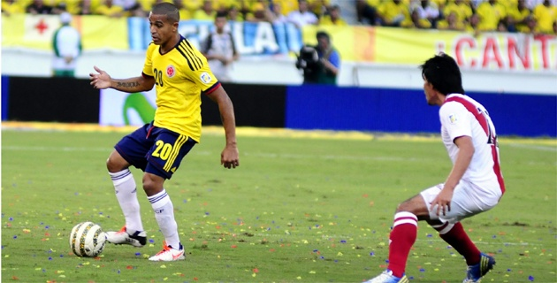

James aconseja a Falcao

El delantero está entre los 30 y con la esperanza de llegar al Mundial.
El centrocampista de la Selección Colombia y del Mónaco de Francia, James Rodríguez, afirmó ayer que el sueño de todo el país es que Falcao pueda jugar el Mundial de Brasil, pero advirtió que “la salud es lo más importante” y no hay que presionarlo.
“Falcao es un jugador muy importante no solo para la Selección sino para el país y el sueño de todos es que llegue al Mundial, pero yo creo que la salud es lo más importante, y depende de como se sienta él para jugar. Lo mejor es no presionarlo porque sería peor”, dijo Rodríguez desde Mónaco.
El jugador agregó que hace quince días vio a Falcao, su compañero en el Mónaco. “Lo vi bien, mucho mejor, por eso digo que ojalá pueda llegar al Mundial, y sobre todo estar bien psicológicamente”.
Rodríguez, que jugará su primer mundial, destacó el buen grupo de delanteros que tiene la selección y mencionó además de Falcao a Jackson Martínez, Carlos Bacca y Teófilo Gutiérrez.
Dejó entrever sin embargo que hay que ponerle fe a la defensa, donde jugadores como Pablo Armero, Camilo Zúñiga y Mario Yepes, no están en su mejor momento e incluso algunos se han lesionado. “Pero yo tengo fe de que van a llegar bien, no hay que meterles presión sino buena energía”, aseguró.
Rodríguez se mostró tranquilo a la hora de pensar en el Mundial, y lo que podrá aportarle al seleccionado que dirige José Pékerman. “Hay muchos sueños y anhelos, y sé que un Mundial es algo único de vivir, pero estoy tranquilo porque en lo personal estoy pasando por un lindo momento y espero hacer un buen Mundial”, comentó.
Sobre los rivales que tendrá Colombia en el Grupo C, en el que es cabeza de serie y en el que están además Grecia, Japón y Costa de Marfil, Rodríguez afirmó que todos son muy difíciles.
Un trino de Macnelly calentó las redes sociales y la lista de Pékerman

El volante barranquillero, antes de conocerse la lista de preseleccionados, escribió en su cuenta de Twitter: “Se fue una ilusión, pero la vida sigue”.
El trino enigmático de Macnelly Torres calentó el preámbulo de la lista del seleccionador de Colombia, José Pékerman.
El país estaba en vilo ayer y antes del mediodía para conocer los 30 jugadores preseleccionados al Mundial de Fútbol Brasil 2014, hasta que la cerilla cayó en las redes sociales. El mediocampista barranquillero Macnelly escribió en su cuenta a las 12:05: “Se fue una ilusión pero la vida sigue”.
De inmediato corrió el fuego y uno de los primeros en reaccionar fue uno de los miembros de la oficina de comunicaciones de la Selección Colombia, que preguntó: ¿Qué significa el trino del mediocampista?
La televisión corrió a entrevistar a la mamá de Macnelly —Adiela Berrío— que no se mordió la lengua en comentar en directo que su hijo sospechaba no estar en su convocatoria.
A la progenitora de Macnelly hasta se le salió: “Presiento que no lo van a llamar y sé que él no es del agrado de los periodistas cachacos”, sostuvo con firmeza la mamá del volante creativo.
Pero todo volvió a la normalidad cuando el técnico José Pékerman entregó la lista de los 30 jugadores, en la que finalmente sí estuvo Macnelly.
El volante barranquillero recibió el voto de confianza de Pékerman cuando este asumió las riendas de la Selección, de ahí en adelante figuró en todas las convocatorias. Macnelly marcó gol en el triunfo 5-0 de Colombia ante Bolivia y tuvo rios juegos importantes.
Después de la revolución que causó su trino, y con la lista oficial de convocados, Macnelly Torres cerró su cuenta de Twitter